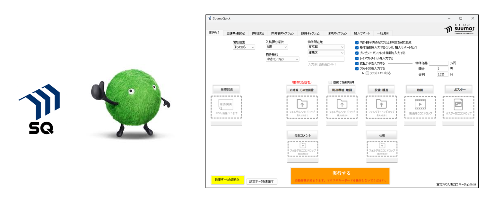
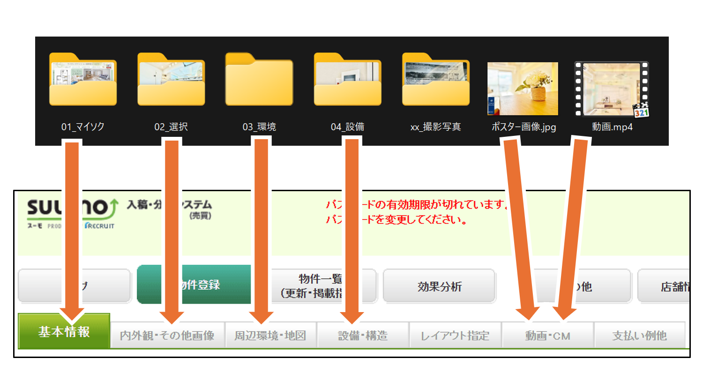
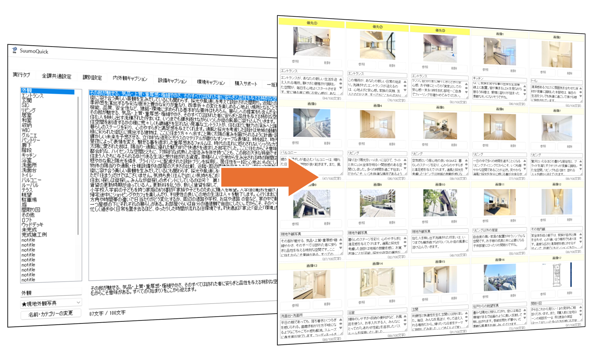
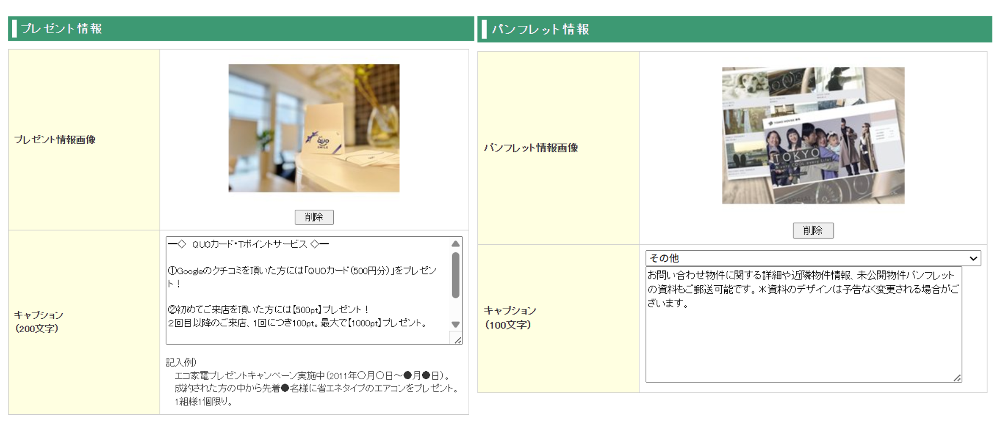
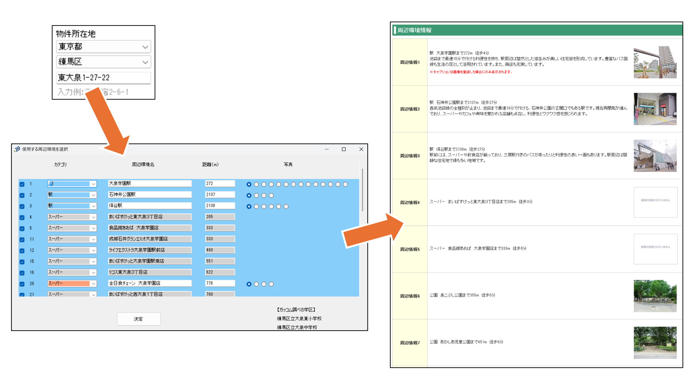
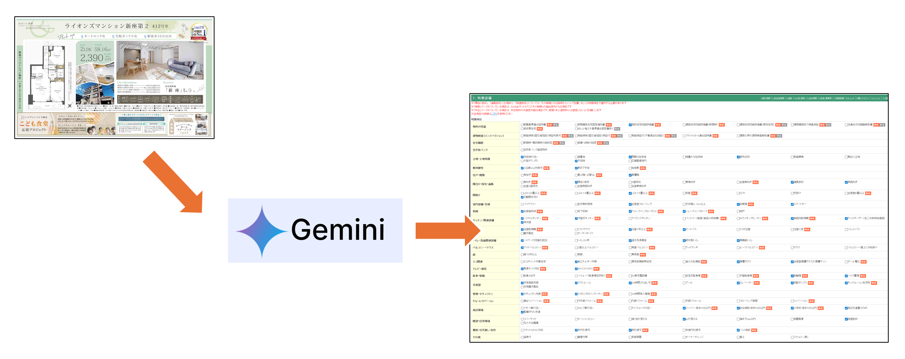
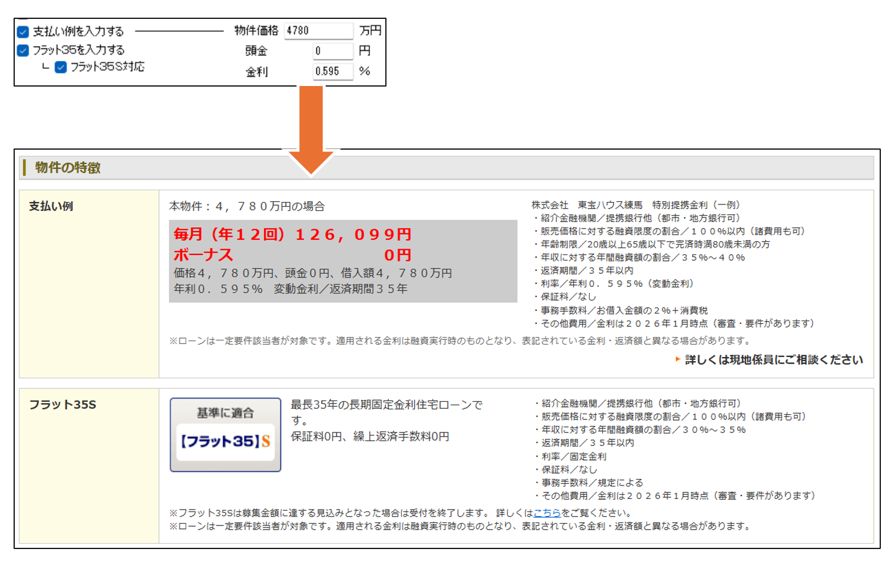
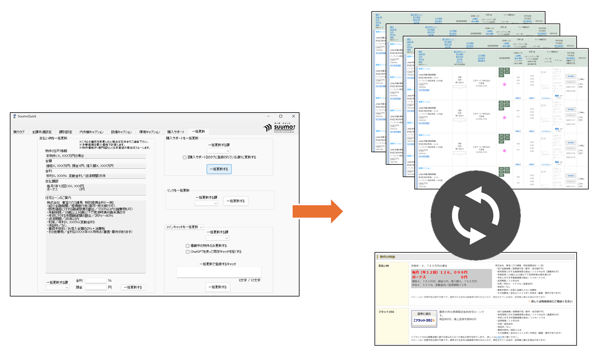

SuumoQuick (スーモクイック)

導入効果
⏱️ 作業時間：1件あたり約30分の削減に成功
✨ 広告品質：キャプションのクオリティを均一化
🏢 利用規模：東宝グループ全体で活用される標準ツールへ成長
開発の背景・概要
以前は1件の入稿に1時間もの時間を要しており、担当者によってキャプション（紹介文）の質にバラつきがあることが大きな課題でした。
SuumoQuickは、誰でも「数クリックで」「高品質な」入稿を完了させることをコンセプトに開発。
2018年の稼働開始以来、2025年現在も現場のニーズに合わせて進化を続けている、システム課の歴史が詰まったソフトです。
主な機能
写真の自動登録
物件の内外観写真や周辺環境写真を、指定のフォルダからまとめてSUUMOへ自動アップロードします。 1枚ずつ選択する手間を省き、入稿作業のスピードを飛躍的に向上させます。

定型文・キャプションの自動挿入
あらかじめ登録された膨大なリストから、物件に最適なキャプションを自動入力します。 担当者ごとの表現の差を解消し、グループ全体の広告レベルを底上げします。

共通情報の自動挿入（購入サポート・パンフレット等）
各社・各課で共通する「購入サポート」の内容や、紹介パンフレット、URLリンクなどの情報をあらかじめ設定し、1クリックで自動挿入します。 物件ごとに同じ内容を繰り返し入力する必要がなくなり、情報の入れ忘れも防止します。

周辺環境情報の自動取得
物件住所から周辺の駅、スーパー、学校などの名称や道路距離を自動算出。 さらに、過去に蓄積した約15万枚のライブラリから最適な環境写真を自動選定してアップロードします。

AIによる文章最適化・情報抽出
ChatGPTやGeminiなどの最新AIと連携。既存の文章を規定の文字数へ最適化したり、販売図面から物件情報を自動抽出したりすることで、さらなる効率化を実現しています。

住宅ローン・支払い例の自動計算
物件価格や金利を入力するだけで、月々の支払額を計算しSUUMOへ自動反映。 店舗ごとの提携銀行プランに合わせた細かな文言調整にも対応しています。

項目の一括更新機能
掲載中の全物件に対し、購入サポート情報や共通リンクなどをまとめて更新。 キャンペーン開始時などの事務作業負担を極限まで削減します。
